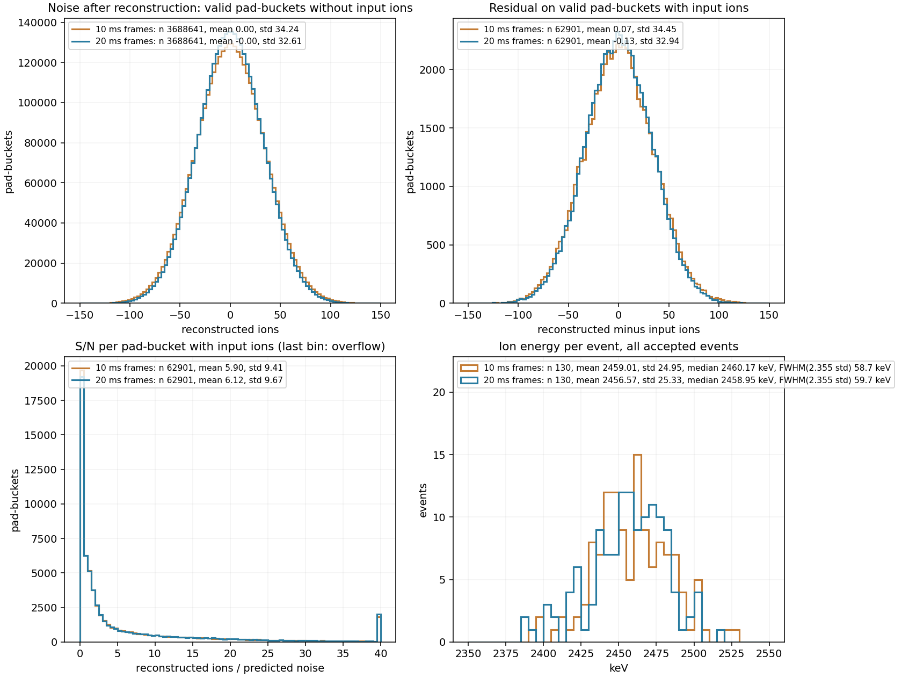
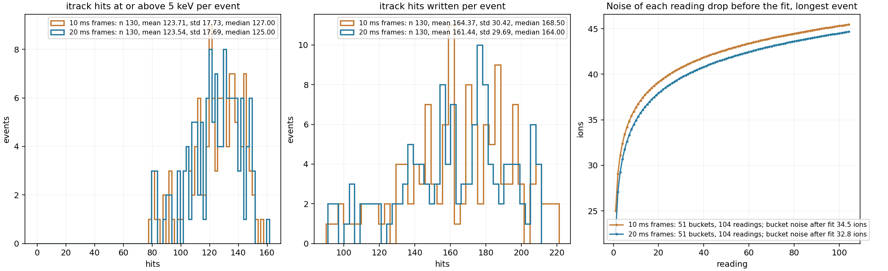

Batches 0, 1 of the pilot NEXUS files, read with the same seeds, 3 mm pads and the same VH1 circuit (20 fF, device changes). The run changes only the ion drift velocity (drift.ion_drift_velocity_cm_s), the ion bucket (ions.ion_bucket_ms) and the VH1 card, so one frame spans 3.0 mm in both and the ions per pad-bucket are statistically the same. The electron arm ran unchanged and is not shown.
The circuit's SPICE results carry over: the gain, the charge fraction and the output window are AC results at 1 Hz, the noise is the stationary output spectrum, which the readout integrates over each conversion window, and the capacitor swap settles in microseconds, far below a 5 ms window. No SPICE rerun was needed for the shorter frame.
| Run | Reference | |
|---|---|---|
| Run card | bb0nu_itaca_pilot_10x100_ion30_10ms | bb0nu_itaca_pilot_10x100_ion15 |
| Ion drift velocity / bucket / frame | 30.0 cm/s · 10 ms · 10 ms, 2 × 5.0 ms | 15.0 cm/s · 20 ms · 20 ms, 2 × 10.0 ms |
| Events | 130 | 130 |
| Pads read | 123,779 | 123,779 |
| Pad-buckets with input ions | 62,901 | 62,901 |
| Noise after reconstruction, observed on pad-buckets without input (ions, RMS) | 34.22 | 32.60 |
| Noise after reconstruction, predicted from the covariance (ions) | 34.22 | 32.59 |
| Mean input ions per pad-bucket with input | 232.0 | 232.0 |
| Signal-to-noise per pad-bucket with input, mean | 6.73 | 7.07 |
| Saturated pads (noiseless output left the window) | 0 | 0 |
| Pads with a converter code at a range end | 0 | 0 |
| Invalid pads | 0 | 0 |
| Bucket residual RMS, valid pad-buckets (ions) | 34.22 | 32.60 |
| Bucket residual RMS, pad-buckets with input (ions) | 34.43 | 32.92 |
| Ion energy per event: mean (keV) | 2459.0 | 2456.6 |
| Ion energy per event: FWHM as 2.355 × std (keV) | 58.7 | 59.7 |
| Ion energy per event: FWHM / mean | 2.39 % | 2.43 % |
| Reconstructed ions per event, mean | 112,284 | 112,172 |
| itrack hits at or above 5 keV per event, mean | 123.7 | 123.5 |
| itrack hits written per event, mean (output cut 3 keV) | 164.4 | 161.4 |
| Response matrix, 51 buckets: readings | 104 | 104 |
| Condition number of the response matrix, 51 buckets | 126.1 | 129.7 |
| Condition number after noise whitening, 51 buckets | 10.9 | 10.1 |
| Noise of the first reading drop, before the fit (ions) | 25.0 | 22.6 |
| VH1 electronics and reconstruction (s/event) | 0.047 | 0.093 |
Noise after reconstruction is the RMS of the reconstructed ions on valid pad-buckets without input ions; the prediction is the mean of the covariance diagonal. The bucket residual compares reconstructed with input ions. The ion energy and the hits are read from the chained hit files of both runs; hits include the noise hits of the fixed frame.


| Buckets | Readings | Run: condition (whitened) | Run: bucket noise median (ions) | Reference: condition (whitened) | Reference: bucket noise median (ions) |
|---|---|---|---|---|---|
| 18 | 38 | 6.7 | 34.46 | 6.2 | 32.81 |
| 21 | 44 | 7.2 | 34.46 | 6.7 | 32.81 |
| 22 | 46 | 7.3 | 34.46 | 6.8 | 32.81 |
| 23 | 48 | 7.5 | 34.46 | 7.0 | 32.81 |
| 24 | 50 | 7.6 | 34.46 | 7.1 | 32.81 |
| 25 | 52 | 7.8 | 34.46 | 7.3 | 32.81 |
| 26 | 54 | 7.9 | 34.46 | 7.4 | 32.81 |
| 27 | 56 | 8.1 | 34.46 | 7.5 | 32.81 |
| 28 | 58 | 8.2 | 34.46 | 7.7 | 32.81 |
| 29 | 60 | 8.4 | 34.46 | 7.8 | 32.81 |
| 30 | 62 | 8.5 | 34.46 | 7.9 | 32.81 |
| 31 | 64 | 8.6 | 34.46 | 8.0 | 32.81 |
| 32 | 66 | 8.8 | 34.46 | 8.2 | 32.81 |
| 33 | 68 | 8.9 | 34.46 | 8.3 | 32.81 |
| 34 | 70 | 9.0 | 34.46 | 8.4 | 32.81 |
| 35 | 72 | 9.1 | 34.46 | 8.5 | 32.81 |
| 36 | 74 | 9.3 | 34.46 | 8.6 | 32.81 |
| 37 | 76 | 9.4 | 34.46 | 8.7 | 32.81 |
| 38 | 78 | 9.5 | 34.46 | 8.8 | 32.81 |
| 39 | 80 | 9.6 | 34.46 | 8.9 | 32.81 |
| 40 | 82 | 9.7 | 34.46 | 9.0 | 32.81 |
| 41 | 84 | 9.9 | 34.46 | 9.1 | 32.81 |
| 42 | 86 | 10.0 | 34.46 | 9.3 | 32.81 |
| 43 | 88 | 10.1 | 34.46 | 9.4 | 32.81 |
| 44 | 90 | 10.2 | 34.46 | 9.5 | 32.81 |
| 51 | 104 | 10.9 | 34.46 | 10.1 | 32.81 |
Numerical results: comparison.h5 (schema itaca.vh1_frame_comparison.v1), made by scripts/production/reduce_vh1_frame_comparison.jl; this page by present_vh1_frame_comparison.py.